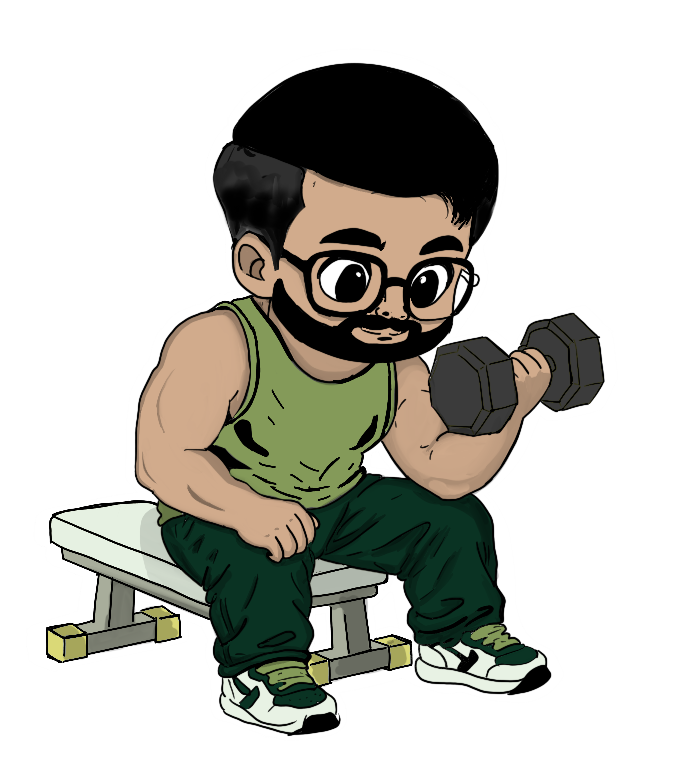
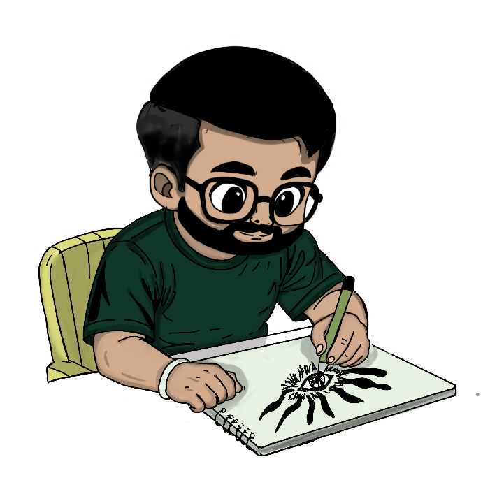
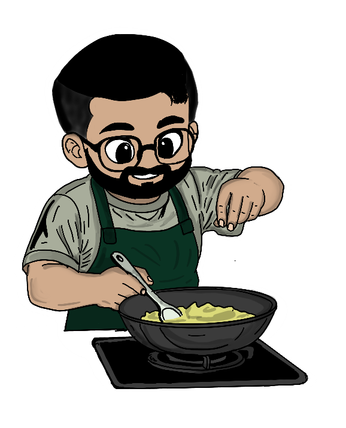
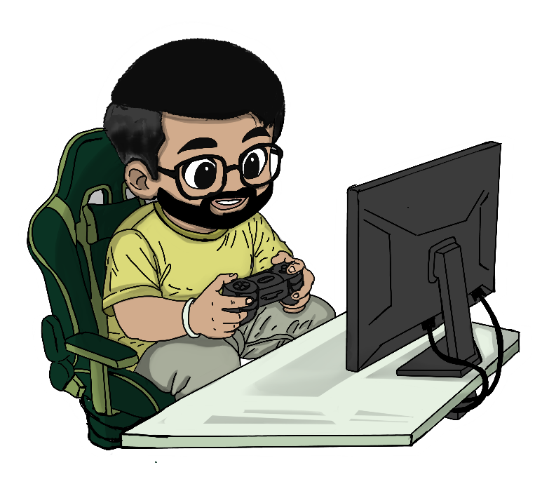
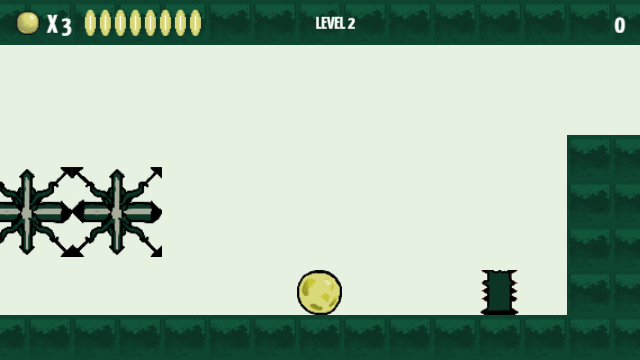

Click to paint, click again to stop
I'm Nikhil - a brand and visual designer who believes great design is honest, intentional, and alive with meaning. My work sits at the intersection of global design sensibility and Indian visual culture.
The duality in my name - written in both Latin and Devanagari-influenced letterforms - reflects how I approach every project: two worlds of reference, one coherent identity.
From strategy through to execution, I build visual systems that grow with a brand's vision and speak directly to the people who matter most.
.webp)




 Photoshop
Photoshop Illustrator
Illustrator After Effects
After Effects Figma
Figma Premiere Pro
Premiere Pro Cursor
Cursor Wix
Wix Framer
Framer Vercel
Vercel Adobe XDPhotoshopIllustratorAfter EffectsFigmaPremiere ProCursorWixFramerVercelAdobe XD
Adobe XDPhotoshopIllustratorAfter EffectsFigmaPremiere ProCursorWixFramerVercelAdobe XD
← → move · ↑ jump
I know it's a lot.
After hours of scrolling through portfolios,
even recruiters and curious visitors deserve a breather.
So before you move on, take a tiny detour
into something a little more playful.
A small splash of nostalgia, tucked between
all the case studies and pixels.
Something familiar. Something fun.
Something with a little bounce.